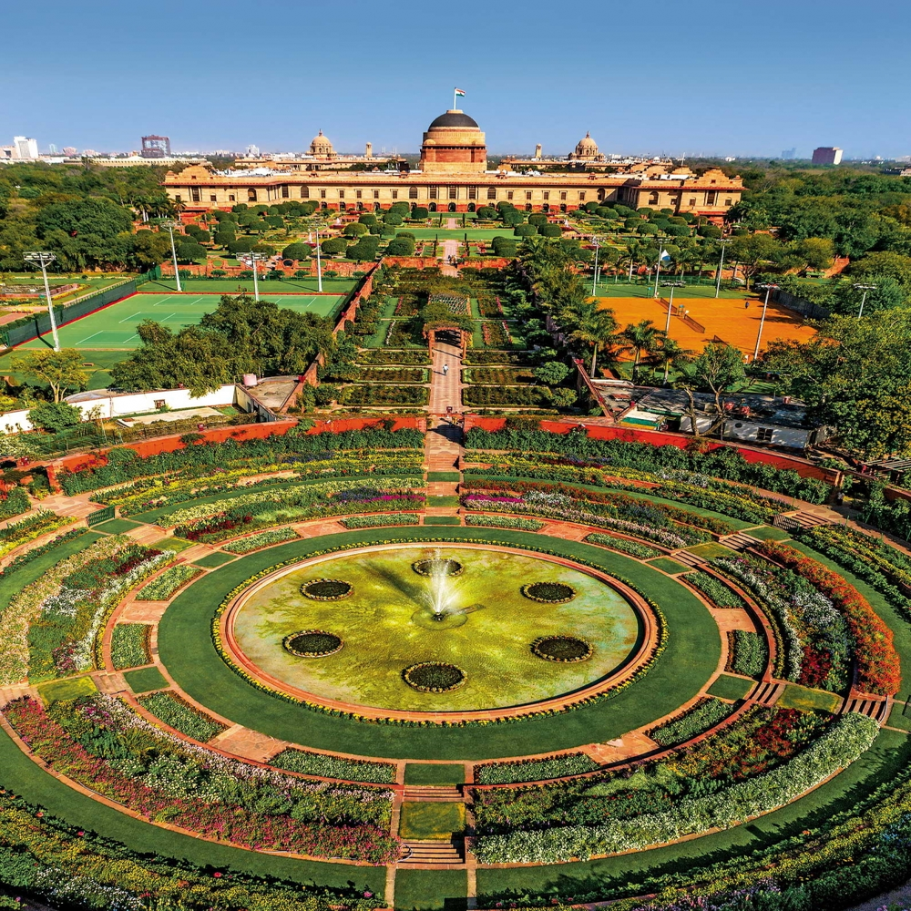

The Red Fort Complex was built as the palace fort of Shahjahanabad – the new capital of the fifth Mughal Emperor of India, Shah Jahan. Named for its massive enclosing walls of red sandstone, it is adjacent to an older fort, the Salimgarh, built by Islam Shah Suri in 1546, with which it forms the Red Fort ComplexThe Red Fort is considered to represent the zenith of Mughal creativity which, under the Shah Jahan, was brought to a new level of refinement. The planning of the palace is based on Islamic prototypes
India Gate
The India Gate (formerly known as the All India War Memorial) is a war memorial located near the Kartavya path on the eastern edge of the "ceremonial axis" of New Delhi, formerly called duty path. It stands as a memorial to 84,000 soldiers of the British Indian Army who died between 1914 and 1921 in the First World War, in France, Flanders, Mesopotamia, Persia, East Africa, Gallipoli and elsewhere in the Near and the Far East, and the Third Anglo-Afghan War.
Humayun's Tomb
Humayun’s garden-tomb is also called the ‘dormitory of the Mughals’ as in the cells are buried over 150 Mughal family members.
The tomb stands in an extremely significant archaeological setting, centred at the Shrine of the 14th century Sufi Saint, Hazrat Nizamuddin Auliya. Since it is considered auspicious to be buried near a saint’s grave, seven centuries of tomb building has led to the area becoming the densest ensemble of medieval Islamic buildings in India.
Lotus Temple
The Lotus Temple was consecrated and opened to the public in December 1986. It was designed by Iranian architect Fariborz Sahba, who won acclaim for the project even before the temple was completed. It subsequently received several awards.
The Lotus Temple derives its name from its design. Like every other Bahāʾī mashriq, it is characterized by a nine-sided construction, in keeping with the Bahāʾī belief in the mystical properties of the number nine. Set on an elevated plinth in a 26-acre (10.5-hectare)
Akshardham
'Akshardham' means the divine abode of God. It is hailed as an eternal place of devotion, purity and peace. Swaminarayan Akshardham at New Delhi is a Mandir – an abode of God, a Hindu house of worship, and a spiritual and cultural campus dedicated to devotion, learning and harmony. Timeless Hindu spiritual messages, vibrant devotional traditions and ancient architecture all are echoed in its art and architecture.The mandir is a humble tribute to Bhagwan Swaminarayan.
Jama Masjid
Its construction was started in 1644 and completed by Mughal emperor Shah Jahan. Made of red sandstone and marble, this gorgeous mosque is also called Masjid-I-Jahanuma, meaning the mosque commanding the view of the world. The courtyard of the mosque has been built with red sandstone and can be accessed from the north, the south and the east, via flights of stairs that were once venues for house markets, food stalls and entertainers. The courtyard is so huge that it can easily accommodate 25,000 devotees at one time
Lodhi Gardens
Lodi Gardens is a city park situated in New Delhi, India. Spread over 90 acres (360,000 m2),it contains Mohammed Shah's Tomb, the Tomb of Sikandar Lodi, the Shisha Gumbad and the Bara Gumbad,architectural works of the 15th century by Lodis - who ruled parts of northern India and Punjab and Khyber Pakhtunkhwa province of modern-day Pakistan, from 1451 to 1526

Rashtrapati Bhavan
Rashtrapati Bhavan was the creation of architects of exceptional imagination and masterfulness, Sir Edwin Lutyens and Herbert Baker. It was Sir Lutyens who conceptualized the H shaped building, covering an area of 5 acres on a 330 acre estate. This mansion has a total of 340 rooms spread over four floors, 2.5 kilometres of corridors and 190 acres of garden area.
Painstaking efforts of thousands of labourers including masons, carpenters, artists, carvers, and cutters saw the completion of this masterwork in the year 1929.
Qutub Minar
This victory tower is a symbol of the synthesis of traditional Islamic architecture and Southwestern Asian design. Elizabeth Lambourn’s Islam Beyond Empires: Mosques and Islamic Landscapes in India and the Indian Ocean studies the introduction of Islam in South Asia and how the region influenced the Islamic religious architecture.These newly arrived Muslims from the Islamic West escaped the Mongol Empire and emigrated to India, where they constructed religious centers.
ABOUT THE STATE
Delhi, officially known as the National Capital Territory of Delhi, is the capital city of India. It is located in northern India and is bordered by the states of Haryana on three sides and Uttar Pradesh to the east. Delhi is one of the largest and most populous cities in India, with a population of over 30 million people in its metropolitan area.
The city is known for its rich history, as it has been inhabited for thousands of years and has been the capital of various empires and kingdoms, including the Mughal Empire and the British Raj. Delhi is home to many historical monuments and landmarks, including the Red Fort, Qutub Minar, India Gate, and Humayun's Tomb, which attract millions of tourists each year.
Delhi is also a major political and commercial hub, with many government offices, corporate headquarters, and markets located in the city. The city has a diverse economy, with industries ranging from information technology to manufacturing, and is also an important center for education and research, with many prestigious universities and institutes located in the city.
Delhi has a rich culture and is known for its cuisine, which includes dishes from all over India as well as unique local specialties such as chaat, chole bhature, and paranthas. The city also hosts many cultural festivals and events throughout the year, including the annual Delhi Book Fair, the India International Trade Fair, and the Delhi International Film Festival.


.png)